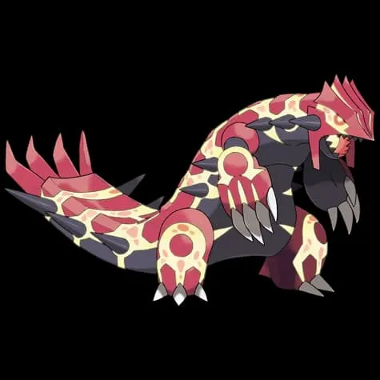
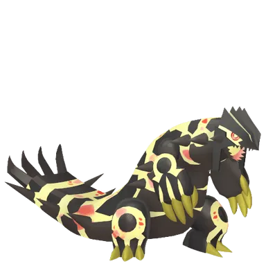

📖 Introduction
Primal Groudon is the powered-up primal form of the legendary Groudon. With Fire and Ground typing, it can unleash devastating attacks that are especially dangerous for Grass, Bug, and Ice-type Pokémon.
Trainers facing Primal Groudon need to focus on exploiting its weaknesses with strong Water, Ground, and Rock-type counters. This guide provides detailed information on counters, movesets, raid strategy, and catch CP to help trainers plan their battles effectively.
Primal Groudon is extremely valuable because:
- It is the best Ground-type attacker in the game
- It provides huge bonuses to Ground, Fire, and Grass-type Pokémon
- It is useful in raids, PvP, and many events
Whether you are a beginner or a seasoned player, understanding Primal Groudon’s attack patterns and weather boosts will give you a significant advantage in the raid.
💡 Expert Insight
Primal Groudon is one of the most powerful raid bosses, with extremely high attack stats and strong Ground and Fire-type moves. Despite its strength, its double weakness to Water-type attacks provides a clear counter strategy.
Coordinated teams using top-tier Water-type Pokémon can significantly reduce battle difficulty. Weather conditions like Rain can further enhance your effectiveness.
📊 Primal Groudon Stats
| Type |  Ground / Ground /  Fire Fire |
| Max CP | 6672 |
| Weather Boost | Sunny |
| Shiny | Yes |
| Base Attack | 353 |
| Base Defense | 268 |
| Base Stamina | 218 |
Primal Groudon has one of the highest attack stats in Pokémon GO, which makes this raid extremely challenging.
🎥 Watch Primal Groudon Raid Guide Video
🎯 Catch CP & 100% IV
After defeating Primal Groudon, trainers encounter normal Groudon.
CP Range:
- No Weather Boost: 3,261-3,372 CP
- Weather Boost: 4,077-4,215 CP
100% IV:
If you encounter a Primal Groudon with these CP values after the raid, it has perfect IVs and is considered a very rare and valuable catch.
- 3372 (Normal)
- 4215 (Weather Boosted)
⚠️ Primal Groudon Weaknesses
Primal Groudon has multiple weaknesses, with Water-type attacks being especially powerful due to double super-effective damage.
| Category | Details |
|---|---|
| ❌ Weak To: |
 Water • Water •
 Grass • Grass •
 Ice Ice
|
| ✅ Resistant To: |
 Poison • Poison •
 Rock • Rock •
 Electric Electric
|
Notes: Because Water-type moves deal double super-effective damage, Water attackers are by far the best option for defeating Primal Groudon quickly.
Why Water-Type Counters Work Best
Water-type Pokémon are typically the strongest counters against Primal Groudon due to both type advantage and high damage potential. Many of the strongest raid attackers in Pokémon GO are Water-type Pokémon, making them ideal for this battle.
Grass attackers can also perform well but are sometimes less reliable if Primal Groudon is using Fire-type charged attacks like Fire Blast.
🗡️ Best Counters for Primal Groudon
The best way to defeat Primal Groudon is to use strong Water-type Pokémon because of its double weakness to Water.
💧 Water-Type Counters (Top Priority – Double Weakness)
Water-type Pokémon are the strongest and most reliable counters against Primal Groudon. Due to its Fire and Ground typing, Water moves deal double super-effective damage, allowing high-DPS Water attackers to shred its HP rapidly.
- Use fast moves like Waterfall
- Charged moves such as Hydro Pump or Surf maximize damage
- Primal or Mega Water Pokémon boost team-wide Water damage
- Swampert: (Water Gun / Hydro Cannon)
- Primal Kyogre: (Waterfall + Origin Pulse)
- Kyogre: (Waterfall + Surf)
Mega Swampert is one of the best possible counters thanks to its powerful Water-type attacks and Mega boost for other Water Pokémon in the raid group.
Primal Kyogre deals extremely high Water damage and provides powerful boosts to other Water-type attackers in the raid.
Kyogre remains one of the most reliable counters due to its excellent balance of bulk and damage.
🌿 Grass-Type Counters (Secondary Option)
- Zarude: (Vine Whip + Power Whip)
- Roserade: (Razor Leaf + Grass Knot)
Zarude performs well due to strong Grass damage combined with good survivability.
Roserade provides excellent Grass-type DPS and is accessible to many players.
❄️ Ice-Type Counters (Secondary Option)
- Mamoswine: (Powder Snow + Avalanche)
Although not the primary option, Ice-type attackers like Mamoswine can also deal strong damage.
🔥 Why These Counters Are Effective
Primal Groudon’s Fire and Ground typing creates a strong double weakness to Water-type attacks.
- 💧 Water‑type attacks deal super‑effective damage
- 🌿 Grass‑type attacks also hit Ground effectively
- ⚡ Electric‑types resist Ground moves and deal stable damage
- ✨ Fire‑type Pokémon help against some non‑STAB moves
Taking advantage of multiple weaknesses helps defeat Groudon’s large HP pool faster.
🏆 Best Regular Counters
Find the best counters for defeating Primal Groudon in Pokémon GO. Here are the top 100 Primal Groudon counters, including moves and why this counter works.
| Pokémon | 🗡️ Fast Moves | 💥 Charged Moves | 🔄 Elite Moves | 🏆 Best Moves | 🧪 Why This Counter Works |
|---|---|---|---|---|---|
| Feraligatr | Shadow Claw / Waterfall / Ice Fang / Bite | Hydro Pump / Ice Beam / Crunch | Water Gun / Hydro Cannon | Waterfall and Hydro Pump | Waterfall and Hydro Pump deal double super-effective damage and provide solid sustained DPS. |
| Urshifu Rapid Style | Rock Smash / Counter / Waterfall | Aqua Jet / Brick Break / Close Combat / Dynamic Punch | None | Rock Smash and Close Combat | Waterfall provides double super-effective Water damage, while Fighting coverage is neutral support. |
| Volcanion | Water Gun / Take Down / Incinerate | Sludge Bomb / Hydro Pump / Overheat / Earth Power | None | Water Gun and Hydro Pump | Water Gun and Hydro Pump deal double super-effective Water damage, making it effective despite its Fire typing. |
| Hisuian Samurott | Waterfall / Fury Cutter / Snarl | Dark Pulse / X-Scissor / Icy Wind / Razor Shell / Sacred Sword | None | Waterfall and Dark Pulse | Waterfall and Razor Shell deal double super-effective Water damage while Dark typing provides neutral coverage. |
| Shadow Gyarados | Waterfall / Dragon Breath / Bite | Hydro Pump / Outrage / Twister / Crunch | Dragon Tail / Aqua Tail / Dragon Pulse | Dragon Tail and Hydro Pump | Shadow boost increases Waterfall and Hydro Pump damage, maximizing double super-effective Water DPS. |
| Shadow Kyogre | Waterfall | Hydro Pump / Surf / Thunder / Blizzard | Origin Pulse | Waterfall and Hydro Pump | Shadow-boosted Waterfall and Hydro Pump produce some of the highest Water-type DPS in the game. |
| Shadow Swampert | Mud Shot / Water Gun | Sludge Wave / Sludge / Earthquake / Surf / Muddy Water | Hydro Cannon | Water Gun and Earthquake | Shadow boost amplifies Hydro Cannon’s already massive Water damage against Primal Groudon’s double weakness. |
| Mega Slowbro | Water Gun / Confusion | Ice Beam / Water Pulse / Scald / Psychic / Drain Punch | Surf | Confusion and Ice Beam / Psychic | Water Gun and Surf deal double super-effective damage while Mega boost strengthens Water-type teammates. |
| Mega Swampert | Mud Shot / Water Gun | Sludge / Sludge Wave / Earthquake / Surf / Muddy Water | Hydro Cannon | Water Gun and Earthquake | Mud Shot and Hydro Cannon deliver extremely high Water DPS while Mega boost increases team Water damage. |
| Mega Blastoise | Rollout / Water Gun / Bite | Skull Bash / Flash Cannon / Hydro Pump / Ice Beam | Hydro Cannon | Rollout and Hydro Pump | Water Gun and Hydro Cannon deal strong double super-effective Water damage and boost Water teammates. |
| Mega Gyarados | Waterfall / Dragon Breath / Bite | Hydro Pump / Outrage / Twister / Crunch | Dragon Tail / Aqua Tail / Dragon Pulse | Dragon Tail and Hydro Pump | Waterfall and Hydro Pump hit double weakness while Mega form boosts Water-type team damage. |
🎯 Catching Tips for Groudon
- 🟡 Use Golden Razz Berry for maximum catch chance
- 🎯 Aim for Excellent Curveball Throws
- 🌀 Curveball throws increase catch probability
- ⏱️ Wait for its attack animation before throwing
Groudon has high CP and occasional dodge patterns — focus on accuracy and timing to secure your catch.
❌ Common Raid Mistakes
- Avoid using fragile Fire or Grass attackers that will faint quickly to Primal Groudon’s strong Fire- and Ground-type moves.
- Also be cautious with Ice attackers if Primal Groudon carries Rock coverage.
🧩 Best Team Compositions
- Lead with strongest Water-type attacker
- Follow with 3–4 additional Water Pokémon
- Add 1 Ground-type as backup
- Keep spare Water attackers ready for relobby
Maintaining consistent Water-type damage throughout the raid is the fastest and safest strategy.
💧 Best Water-type Counters
- Primal Kyogre (Waterfall + Origin Pulse) - hits extremely hard with Water damage
- Mega Swampert (Water Gun + Hydro Cannon) - Deal super-effective Water damage
- Shadow Kyogre (Waterfall + Origin Pulse) - hits extremely hard with Water damage
- Kyogre (Waterfall + Origin Pulse) - hits extremely hard with Water damage
- Greninja
- Kingler (Bubble + Crabhammer)
Budget Counter Team
If you do not have Legendary Pokémon, these options still perform well:
- Swampert - Deal super-effective Water damage
- Gyarados - Boost Water-type teammates
- Vaporeon - Very high DPS in raids
- Roserade
- Leafeon
- Mamoswine
These Pokémon are widely available and still deal strong super-effective damage.
👥 Raid Difficulty & Trainers Needed
If you are new to raids or under level 35, focus on joining larger groups.
- Join raids with 5–8 trainers
- Use Water or Grass Pokémon
- Avoid Electric Pokémon
- Prioritize survival over maximum damage
Beginners should focus on building reliable Water teams such as Vaporeon, Gyarados, or Swampert.
Players around level 35–40 can contribute much more damage by optimizing their teams.
- Build a full Water-type team
- Power up Kyogre or Swampert
- Use Mega Water Pokémon
- Relobby quickly if your team faints
With good counters, raids can often be completed with only 4–5 players.
Primal Groudon is extremely powerful and requires coordination. However, its double weakness to Water makes it manageable with strong teams.
- 4–5 Trainers: Possible with optimized Water teams
- 6–8 Trainers: Comfortable clear
- 8+ Trainers: Very safe and fast win
🧠 Raid Strategy & Advanced Tips
1. Prioritize Water Damage
Stack as many high-level Water-type attackers as possible. Because of the double weakness, even mid-tier Water Pokémon can outperform stronger neutral attackers.
2. Prepare for Solar Beam
If Primal Groudon has Solar Beam, Water-type Pokémon may faint quickly. In this situation, consider relobbying quickly or mixing in bulkier Water attackers to maintain DPS.
3. Coordinate Primal Boosts
Primal Pokémon provide powerful team-wide damage bonuses. Activating a Primal Water Pokémon during the raid significantly increases overall damage output and reduces completion time.
Duo Strategy
Two experienced trainers with maxed Water-type teams can defeat Primal Groudon under Rainy weather conditions.
Trio Strategy
A trio is realistic in most weather conditions with optimized counters and Mega boosts.
Solo Strategy
A true solo against Primal Groudon is not realistically achievable due to its extremely high HP pool.
⚡ Quick picks
- Best Mega Team: Swampert, Blastoise, Gyarados
- Best Shadow Team: Kyogre, Gyarados
- Best Regular Team: Kyogre
🌦️ Weather Boost
Primal Groudon gets a weather boost in:
☀️ Sunny Weather
- Boosts Fire and Ground-type attacks.
- Makes the raid slightly harder
🌧️ Rainy Weather
- Boosts Water-type counters
- Best weather for defeating Primal Groudon
🌀 Primal Groudon Moveset
Primal Groudon's best moveset is Mud Shot and Precipice Blades. These moves are boosted by Sunny weather. You need an Elite Charge TM to teach Primal Groudon Precipice Blades
🗡️ Fast Moves
Primal Groudon has access to 2 Fast Attacks (Mud Shot and Dragon Tail), which cover Ground and Dragon-type attacks. When using Mud Shot you will benefit from STAB (Same-Type-Attack-Bonus), which increases the move damage by ×1.2.
- Mud Shot
- Dragon Tail

💥 Charged Moves
Primal Groudon has access to 3 Charge Attacks (Earthquake, Fire Blast, Solar Beam), which cover Ground, Fire, and Grass-type attacks. When using Earthquake, Fire Blast you will benefit from STAB (Same-Type-Attack-Bonus), which increases the move damage by ×1.2.
- Earthquake
- Fire Blast
- Solar Beam
🔄 Elite Moves
Primal Groudon has access to 2 Elite Attacks (Precipice Blades, Fire Punch), which cover Ground, Fire, and Grass-type attacks. When using Precipice Blades, Fire Punch you will benefit from STAB (Same-Type-Attack-Bonus), which increases the move damage by ×1.2.
- Precipice Blades
- Fire Punch
Most dangerous moveset: Solar Beam is the most dangerous move because it can one-shot Water-type counters.
⚔️ Is Primal Groudon Good in PvP?
Primal Groudon is extremely strong in Master League because of its high attack stat and powerful Ground type moves.
Is Primal Groudon Good in PvE?
Primal Groudon is one of the best Ground type attackers in Pokémon GO and also boosts Fire, Grass, and Ground type Pokémon during raids.
✨ Shiny Primal Groudon
After defeating Primal Groudon in a raid, players can encounter the regular Groudon with a chance of it being shiny. While Primal Groudon itself cannot be caught, the reward Pokémon can be shiny.
Shiny Groudon Appearance: A darker orange and red color scheme compared to the normal version. Participating in multiple raids increases the likelihood of obtaining a shiny version.
Evolution, Mega Details & Buddy Distance
| Evolution Line | Base(Groudon) → Primal(Groudon) |
| Primal Energy (First) | 400 |
| Subsequent Cost | 80 |
| 🚶 Buddy Distance | 20 km |
| Primal Energy via Buddy | Yes |
| Primal Boost Bonus(Walking) | Extra Candy |
| Primal Boost Bonus(Catch) | Extra Fire/Ground-type Candy |
| Primal Boost Bonus(Buddy^) | 100 Primal Energy per candy |
(^ denotes first mega evolved - Buddy bonus applies after Mega Evolution is registered.)
⚖️ Shadow & Mega Comparison
🧬 Best Mega Evolutions
Recommended Megas to use against Primal Groudon:
- Rayquaza – 🕊️ Flying boost
- Garchomp – 🌍 Ground boost
- Swampert, Blastoise, Gyarados, Slowbro, Salamence, Sharpedo – 💧 Water boost
- Rayquaza, Salamence – 🐉 Dragon boost
🧬 Boost Primal Groudon
A list of Mega Pokémon that boost Primal Groudon's Ground and Fire-type moves, Candy, and Candy XL from catching Primal Groudon.
- Houndoom, Blaziken, Camerupt – Fire boost
- Steelix, Swampert, Camerupt, Garchomp – Ground boost
📌 Is Primal Groudon Worth Raiding?
Pros:
- One of the strongest Ground-type Pokémon
- Excellent raid attacker
- Important for Primal evolution
Cons:
- Requires strong counters
- Can be difficult for small groups
Overall, Primal Groudon is absolutely worth raiding because of its power and usefulness in both raids and PvP.
🎁 Raid Rewards
Defeating Primal Groudon in Pokémon GO Primal Raids grants several valuable rewards. The number of items received may vary depending on raid performance, friendship bonuses, and gym control.
| Reward | Typical Amount |
|---|---|
| Golden Razz Berry | 3 – 12 |
| Rare Candy | 3 – 9 |
| Revive | 6 – 15 |
| Hyper Potion | 6 – 15 |
| Fast TM | 0 – 2 |
| Charged TM | 0 – 2 |
| Stardust | 1000 |
Premier Balls
After the raid battle, trainers receive Premier Balls to catch Groudon. The number of Premier Balls depends on factors such as damage contribution, gym control, and friendship level with other trainers. Typically players receive 8–16 Premier Balls.
Defeating Primal Groudon rewards trainers with Primal Energy.
The amount of Primal Energy received depends on how quickly the raid boss is defeated.
Completion Speed
- Fast Defeat Time:
- 80-100 Energy
- Medium Defeat Time:
- 60-80 Energy
- Slow Defeat Time:
- 50-60 Energy
You need 400 Primal Energy to transform Groudon for the first time.
🖼️ Regular vs Shiny Primal Groudon Forms
A darker orange and red color scheme compared to the normal version
Groudon
Shiny Groudon

Primal Groudon

Shiny Primal Groudon
Images are sourced from publicly available game assets and are used for educational purposes under fair use. Pokémon and related assets are property of Niantic, Nintendo, and The Pokémon Company.
❓ FAQ
What makes Primal Groudon unique?
Primal Groudon’s sheer size, molten body, and devastating Precipice Blades move make it one of the most visually impressive and powerful Pokémon in Primal Raid Battles.
Can Primal Groudon be shiny in Pokémon GO?
Yes, Primal Groudon has a shiny form available during certain raid events
How many trainers are required to defeat Primal Groudon?
2–4 high-level trainers with optimized counters can defeat Primal Groudon. Larger groups make the raid faster and safer.
Is Primal Groudon difficult to defeat?
Primal Groudon has extremely high attack and decent bulk. Proper type advantage and dodging charged moves make this raid manageable.
Does Primal Groudon keep its Mega form after the battle?
Mega Evolution lasts only during battles where Mega is enabled; it does not persist outside combat.
What is Primal Groudon’s exclusive move?
Primal Groudon uses the special move Precipice Blades. This Ground-type attack deals massive damage to all opposing Pokémon in its path, making it devastating in raids.
🏁 Conclusion
Primal Groudon is a high-difficulty raid boss, but its double weakness to Water-type moves provides a clear path to victory. Build a strong Water-focused team, watch for Solar Beam coverage, coordinate Primal boosts, and take advantage of Rainy weather to defeat it efficiently and collect valuable Primal Energy.
Defeating Primal Groudon efficiently relies on type advantage, sustained DPS, and shields. Weather boosts and careful counter selection can make the difference between a swift takedown or a drawn-out battle. Even smaller teams can succeed with well-leveled Water/Ice Pokémon and perfect timing.